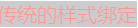
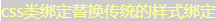
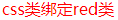
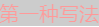
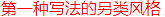
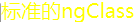
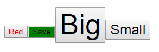
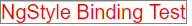

本篇根据Angular官网提供的例子，对Angular涉及到的样式绑定进行说明。
一、提供的CSS样式
1 .red{
2 color:red;
3 }
4 .green{
5 color: green;
6 }
7 .yellow{
8 color: yellow;
9 }
10 .size{
11 font-size: 20px;
12 }
13 .back{
14 background-color: gray;
15 opacity: 0.4;
16 }二、绑定样式
（1）、传统的样式绑定-------绑定red size back
1 <span class="red size back">传统的样式绑定</span>
效果图如下：

（2）、CSS类绑定----添加或删除单个类的最佳途径
CSS类绑定的语法和property绑定类似。但是方括号中的部分不是元素的属性名，而是由class前缀，一个点（.）和css类的名字组成，其中后两部分是可选的，例如：[class.class-name]。借助CSS类绑定，可以从元素的class attribute 上添加和移出css类名。
a、绑定语法1-----用yellow back 替换标准绑定（绑定多个css样式）
首先在组件中定义变量： 1 yellowBack = 'yellow back';
然后给<span>标签绑定上述定义的变量： 1 <span class="red size back" [class]="yellowBack">css类绑定替换传统的样式绑定</span>
通过[ class ]绑定的样式将替换class传统绑定的样式，效果图如下：

b、绑定语法2-----绑定单个css样式----绑定到特定的类名。当[ class.类名] = ‘true|false’，当为真的时候，Angular会添加这个类，否则会移出这个类
首先在组件中定义变量： 1 isRed = true;
然后给<span>标签绑定上述定义的变量： 1 <span [class.red]="isRed">css类绑定red类</span>
效果图如下：

（3）、NgClass----同时添加或移出多个类
a、不简洁的写法（目的是为了加深对 [NgClass] 的理解）
首先在组件中定义几个变量：
1 isRed = true;
2 isGreen = true;
3 isYellow = true;
4 isBack = true;
5 isSize: true;在模板页中写法如下：
1 <span [ngClass]="{'red':true,'back':true,'size':true}">第一种写法</span>
效果如下所示：

1 <span [ngClass]="isRed?'red':''">第一种写法的另类风格</span>
效果如下：

b、常规写法----将ngClass绑定到一个键值对对象，键为类名，值为bool类型，如果值为true，则对应的类被加上，否则该类会被移出。
首先在组件中定义变量样式对象：
1 currentClasses = {
2 'yellow': true,
3 'back': false,
4 'size': true
5 };然后在模板页面对该样式对象进行绑定，根据值得true或者false决定对应样式是否会被添加。一般值会在组件中预先定义好，在修改的时候只需要修改预先定义好的变量即可
1 <span [ngClass]="currentClasses">标准的ngClass</span>效果图如下所示：

（4）、Style Binding----设置单一样式值的方法。样式绑定的语法与property属性绑定类似。但是方括号中的部分不是元素的属性名，而由style前缀、一个点（.）和css样式的属性名组成，形如：[ style.style-property]。有些样式绑定中的样式带有单位，这种情况，根据条件以‘em’和‘%’来设置字体大小的单位。
1 <button [style.color]="'red'">Red</button>
2 <button [style.background-color]="'green'">Save</button>
3 <button [style.font-size.em]="3">Big</button>
4 <button [style.font-size.%]="150">Small</button>效果显示如下：

注意：[ style.style-property]=“ ‘类名这里加单引号’ ”；style-property样式属性命名方法可以用中线命名法，就像这个例子中一样，也可以使用驼峰式命名法，比如fontSize.
（5）、NgStyle----同时设置多个内联样式
首先在组件中定义变量和样式：
1 isRed = true;
2 curentStyle = {
3 'color': this.isRed ? 'red' : 'green',
4 'border': '1px solid gray',
5 'fontSize': '20px'
6 };在模板中将样式通过 [ ngStyle] 绑定
1 <span [ngStyle]="curentStyle">NgStyle Binding Test</span>
效果显示如下：